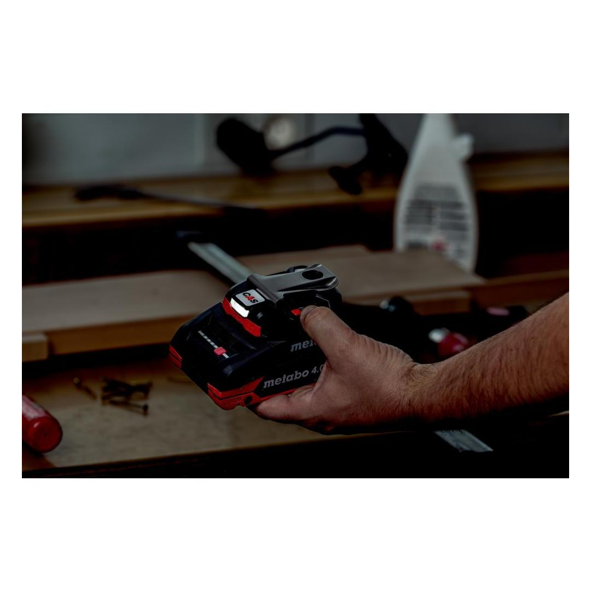
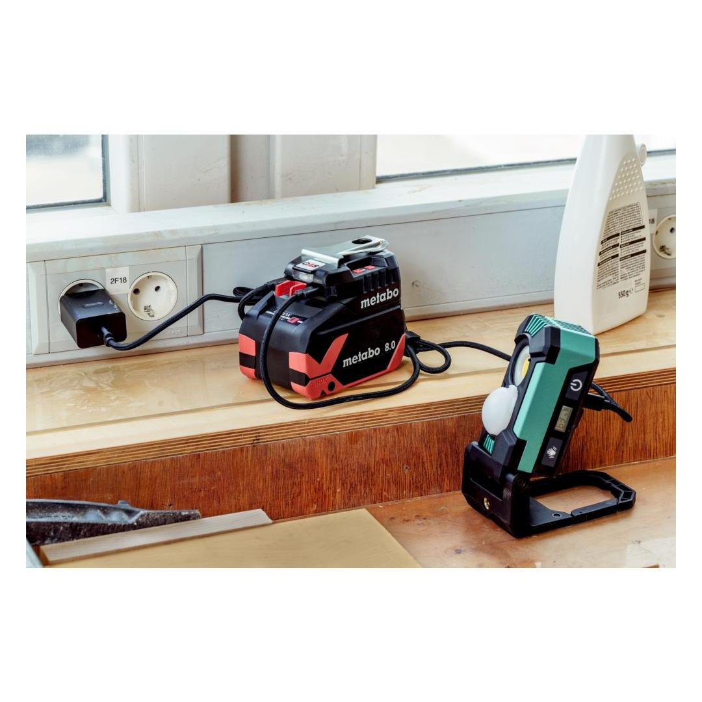
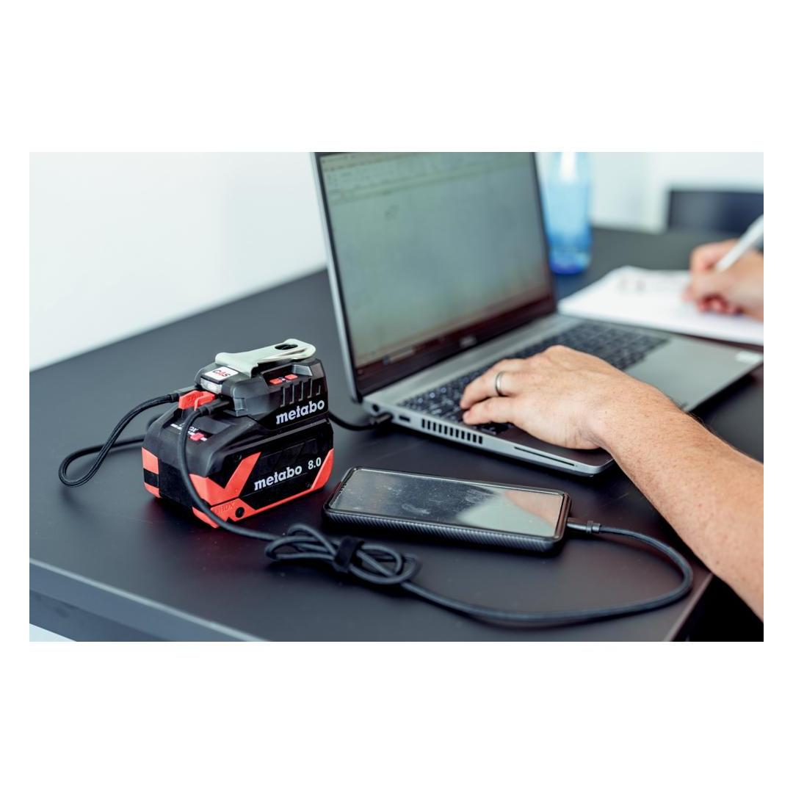
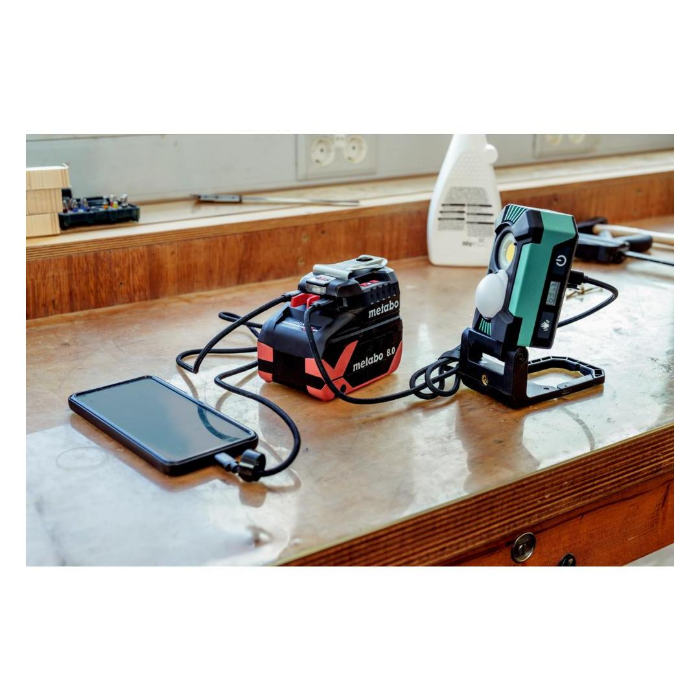
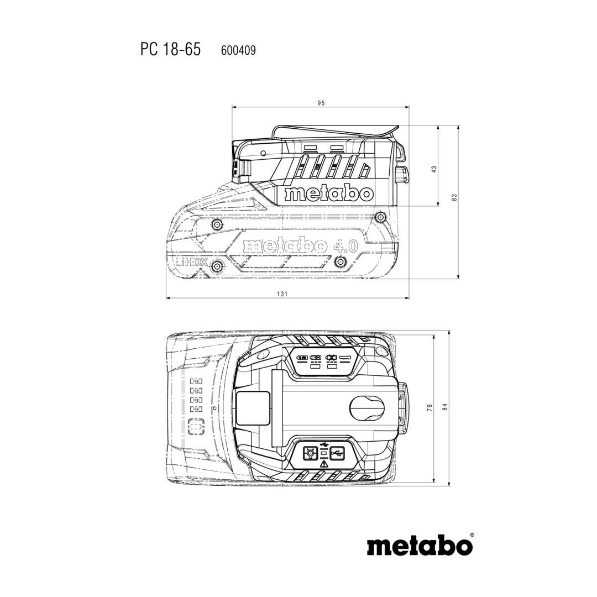
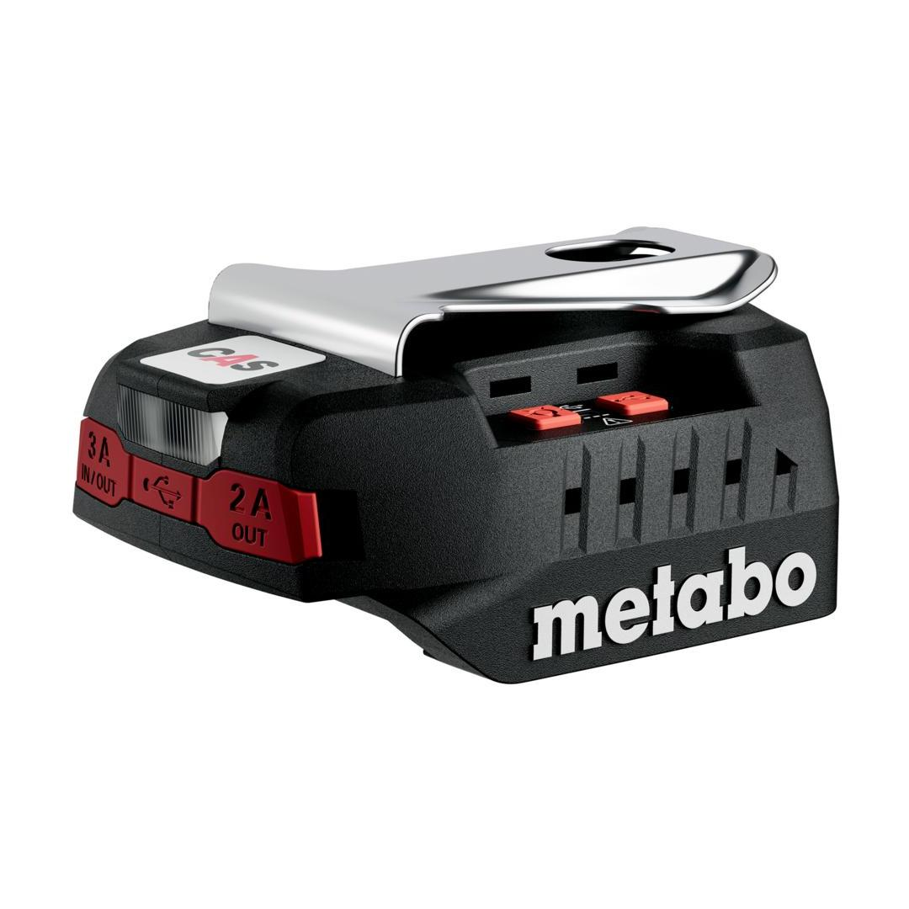
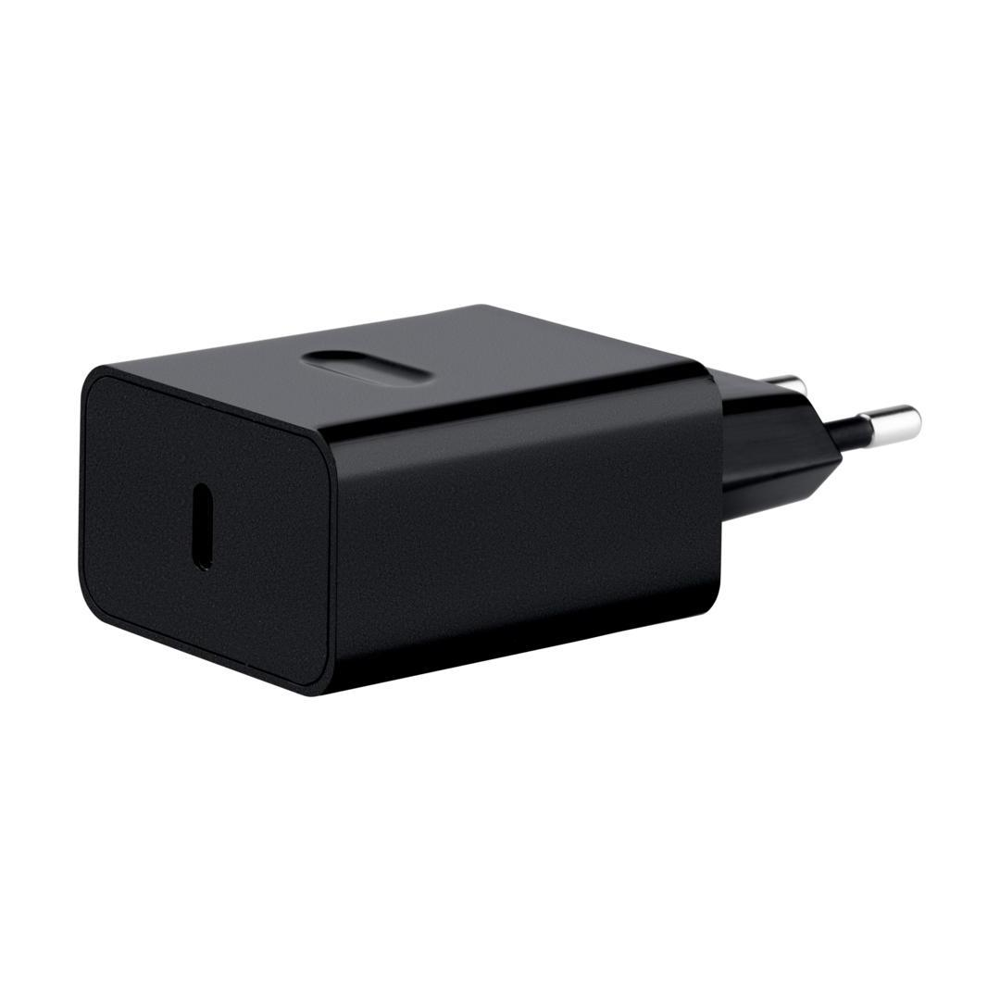
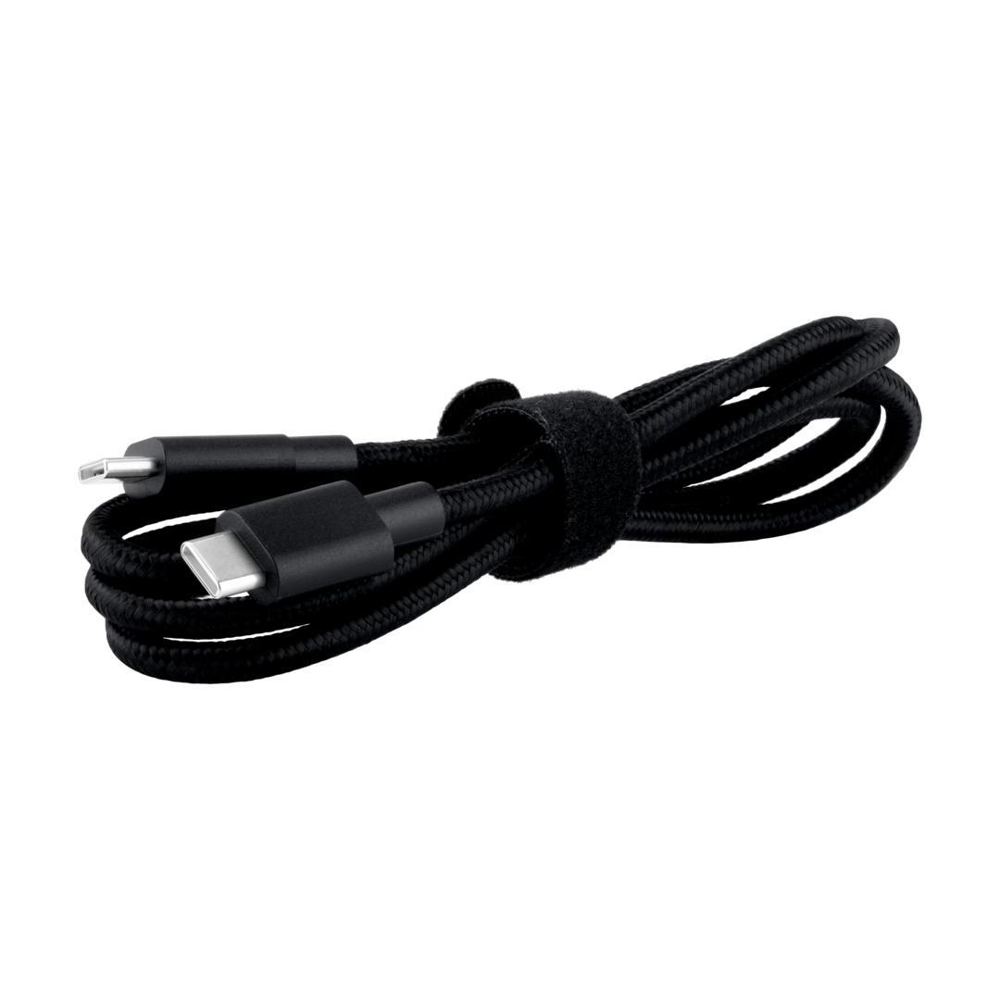

Metabo | 18 V
600409000












Product Description
- The perfect companion on the go: charger in a pocket format for 18V battery packs with integrated LED light and power bank function
- Quickly ready for use: push on the battery pack, connect the power source using the power plug and/or USB-C cable, and start the charging process
- With a battery pack, the power charger becomes a power bank with PD control (power delivery) for smartphones, tablets or laptops
- Up to 2 devices can be charged in parallel, or one as long as the battery pack is being charged
- High-quality accessories suitable for the construction site included in the scope of delivery: mains adapter and USB-C cable
- Bright LED light for close range - ideal for on the go use
- Drilled keyhole, belt hook and eye on the housing for diverse mounting options
- Many brands, one battery pack system: charger for charging all battery packs of the CAS brands: www.cordless-alliance-system.com
Product Highlights
LED Power lightLED Power light
very good illumination thanks to the high-performance Power LED
CAS, the multi-brand battery systemCAS, the multi-brand battery system
100% compatibility of machine, battery packs and chargers of one volt class – from Metabo and other brands. Discover now at www.cordless-alliance-system.com
Charging function for mobile terminals with USB-C cableCharging function for mobile terminals with USB-C cable
Charging function for mobile terminals with USB-C cable
Charging function for battery packs when connected to the mainsCharging function for battery packs when connected to the mains
Charging function for battery packs when connected to the mains
Technical Details
KEY FIGURES| Battery voltage | 18 V |
| Mains voltage | 110 - 240 V |
| Mains frequency | AC/DC 0/50/60 Hz |
| Output rating | 65 W |
| Charging time for 18 V/4.0 Ah | 70 min |
| Charging time for 18 V/8.0 Ah | 145 min |
| Weight without battery pack | 0.14 kg / 0.31 lbs |
Scope of delivery